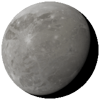

Jupiter's moon Ganymede is the largest moon in our solar system, bigger than the planet Mercury and dwarf planet Pluto.
NASA's Hubble Space Telescope has found the best evidence yet for an underground saltwater ocean on Ganymede. The ocean is thought to have more water than all the water on Earth's surface. Ganymede's ocean is estimated to be 60 miles (100 kilometers) thick – 10 times deeper than Earth's ocean – and is thought to be buried under a 95-mile- (150-kilometer-) thick crust of mostly ice. Identifying liquid water is crucial in the search for habitable worlds beyond Earth, and in the search for life as we know it.
Ganymede is the only moon known to have its own magnetic field – a discovery made by NASA's Galileo spacecraft in 1996. The magnetic field causes auroras, which are ribbons of glowing, hot, electrified gas, in regions circling the north and south poles of the moon. Because Ganymede is close to Jupiter, its magnetic field is embedded in, or lies within, Jupiter's magnetic field.
When Jupiter's magnetic field changes, the auroras on Ganymede also change, "rocking" back and forth. It was by watching the rocking motion of the two auroras, that a team of scientists led by Joachim Saur of the University of Cologne in Germany came up with the idea of using the Hubble space telescope to learn more about the inside of the moon.
NASA's Juno mission has observed mineral salts and organic compounds on the surface of Ganymede. Data for this discovery was collected by the Jovian InfraRed Auroral Mapper (JIRAM) spectrometer aboard the spacecraft during a close flyby of the icy moon on June 7, 2021. The findings, which could help scientists better understand the origin of Ganymede and the composition of its deep ocean, were published on Oct. 30, 2023, in the journal Nature Astronomy.
Discovery and Name
Ganymede was discovered by Italian astronomer Galileo Galilei on Jan. 7, 1610. The discovery, along with his discovery of three other large moons around Jupiter, was the first time a moon was discovered orbiting a planet other than Earth. The discovery eventually led to the understanding that planets in our solar system orbit the Sun, instead of our solar system revolving around Earth.
In mythology, Ganymede ("GAN uh meed") was a beautiful young boy who was carried to Olympus by Zeus (the Greek equivalent of the Roman god Jupiter) disguised as an eagle. Ganymede became the cupbearer of the Olympian gods.
Potential for Life
A computer model of Ganymede's interior created in 2014 supported the idea that the development of primitive life might be possible there. The model indicated the icy moon's rocky sea bottom might be in contact with salt water. Scientists think water and rock interacting are key for the development of life.
Size and Distance
Ganymede's diameter is about 3, 270 miles (5,260 kilometers). It is the largest moon in our solar system. It's bigger than Mercury and Pluto. Ganymede is about 665,000 miles (1.07 million kilometers) from Jupiter, which orbits about 484 million miles (778 million kilometers) from the Sun. Jupiter is about five times farther from the Sun than Earth. From this distance, it takes sunlight 43 minutes to travel from the Sun to Jupiter and its moons.
Orbit and Rotation
Ganymede orbits Jupiter at a distance of 665,000 miles (1,070,000 kilometers), making it third in distance from Jupiter among the Galilean satellites:
Io is the most volcanically active world in the solar system, with hundreds of volcanoes, some erupting lava fountains dozens of miles (or kilometers) high.
Europa is thought to have an iron core, a rocky mantle and an ocean of salty water that may be one of the best places to look for life beyond Earth in our solar system.
Ganymede is the largest moon in our solar system and the only moon with its own magnetic field.
Callisto is the most heavily cratered object in our solar system.
Ganymede completes an orbit around Jupiter about every seven Earth days (7.155). Ganymede orbits the Sun along with Jupiter and its other satellites every 12 Earth years.
Ganymede, Io, and Europa are in what is called a resonance – every time Ganymede orbits Jupiter once, Europa orbits twice, and Io orbits four times. This pattern in their orbits is called orbital resonance. (Jupiter's other large moon – Callisto – is not part of the orbital resonance, seemingly because it was too far away from Jupiter early in the moons' history for its orbit to be pulled inward toward Jupiter.) Over time, the orbits of most large satellites or planets tend to become circular, but that isn't the case for these three. Their resonance forces their orbits to become slightly elliptical, or eccentric. The satellites line up with one another at the same points in their orbits over and over, giving each other a small gravitational tug that keeps their orbits from becoming circular.
Ganymede is tidally locked, meaning that like Earth's Moon, the same side of Ganymede always faces Jupiter. The other three Galilean moons are also tidally locked.
Moons
Ganymede does not have moons.
Rings
Ganymede does not have rings.
Formation
Ganymede and Jupiter's other large moons (Io, Europa, and Callisto) likely formed from leftover material after Jupiter condensed out of the initial cloud of gas and dust surrounding the Sun, early in the history of our solar system. Ganymede is likely about the same age as the rest of the solar system – about 4.5 billion years old.
NASA's Juno spacecraft is currently orbiting Jupiter with the main goal of learning more about the origin and evolution of Jupiter and its satellites. Scientists think that understanding Jupiter will provide critical knowledge about our solar system, and the planetary systems being discovered around other stars.
Structure
Ganymede has three main layers: A metallic iron core at its center, a spherical shell of rock (mantle) surrounding the core, and a spherical shell of mostly ice surrounding the rock shell. The surface is the very top of the ice shell. Scientists have discovered irregular lumps beneath Ganymede's icy surface. These irregular masses may be rock formations, supported by Ganymede's icy shell for billions of years.
Computer models show Ganymede might have ice and oceans stacked up in several layers like a club sandwich. Scientists first suspected Ganymede had an underground ocean in the 1970s. The Galileo spacecraft discovered Ganymede's magnetic field in 1996, providing evidence to support the theory.
NASA's Hubble Space Telescope has found more evidence for an underground saltwater ocean, and evidence of a thin oxygen atmosphere on Ganymede.
Surface
Ganymede has two distinct types of terrain: large, bright regions of ridges, and grooves that slice across older, darker terrains. This suggests to scientists that Ganymede's crust has been under tension from global tectonic processes. NASA's Juno spacecraft took images of Ganymede's surface during flybys in June 2021.
The images of Ganymede show its surface is a mix of two types of terrain. Forty percent of the surface is covered by highly cratered dark regions, and the remaining sixty percent is covered by a light grooved terrain, which forms intricate patterns across the moon. Some of the groove ridges are as high as 2,000 feet (700 meters), and the grooves run for thousands of miles across Ganymede's surface. The large craters on Ganymede are mostly flat, probably due to settling in the soft icy surface. Both bright and dark rays of ejecta can be seen around Ganymede's craters.
In 2004, scientists discovered irregular lumps beneath the icy surface of Ganymede. The irregular masses may be rock formations, supported by Ganymede's icy shell for billions of years. This tells scientists that the ice is probably strong enough, at least near the surface, to support such rock masses from sinking to the bottom of the ice. However, this anomaly could also be caused by piles of rock at the bottom of the ice.
Atmosphere
Astronomers using the Hubble Space Telescope have found evidence of a thin oxygen atmosphere on Ganymede. The researchers think the oxygen is coming from Ganymede's icy surface. Ganymede is much colder than Earth, with daytime surface temperatures ranging from -297 to -171 degrees Fahrenheit (90 to 160 Kelvin). Jupiter and its moons receive less than 1/30th the amount of sunlight that the Earth does, and Ganymede doesn't have a dense atmosphere to trap heat.
Magnetosphere
The Galileo spacecraft, the first to orbit Jupiter, made the major discovery that Ganymede has its own magnetosphere – a region of charged particles that surrounds many planets but had never before been found around a moon. Galileo even captured sounds of whistling and static caused by Ganymede's magnetosphere.
Pop Culture
Ganymede played a big role in the TV series, "The Expanse." Ganymede also was featured in several other TV shows including:
The anime TV series "Cowboy Bebop"
The Canadian show "Starhunter"
The British series "Red Dwarf"
Ganymede is a favorite setting in science fiction books. Legendary British writer Arthur C. Clarke was inspired by images from Voyager 2 showing grooved ridges cutting across parts of Ganymede when he created Ganymede City for his novel "3001: The Final Odyssey." Clarke references Voyager in his sources and writes about his anticipation for more images from the Galileo spacecraft which started exploring Ganymede on June 27, 1996, just days before the book was published.
In 1950, American writer Robert A. Heinlein wrote "Farmer in the Sky" about a teenage boy who followed his father to Ganymede to set up a farm.
Ganymede also played a role in:
"Cold As Ice" (Series) by Charles Sheffield
"The Ice Orphan of Ganymede" by Leonardo Ramirez
"The Runaway Robot" by Lester Del Rey
"The Moons of Jupiter" by Alice Munro
"The Gentle Giants of Ganymede" by James P. Hogan
Ganymede may not be burning up the music charts, but it does have a following in the music world. An American electropop duo named their band Ganymede, and released a song called "Operation Ganymede" in 2008. The indie-pop group Brazzaville named an album and its title track "The Oceans of Ganymede" after hearing news that Ganymede may have a saltwater ocean.